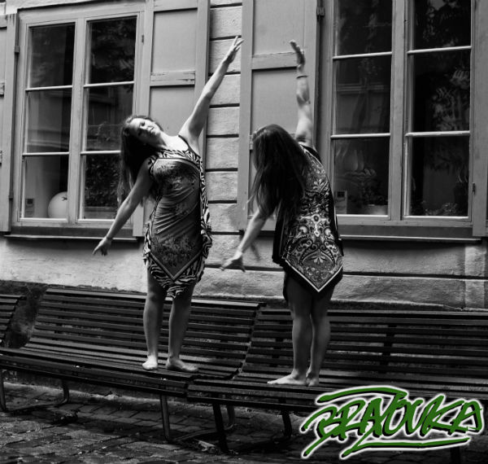
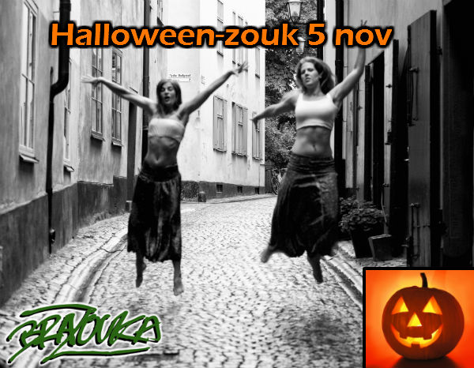
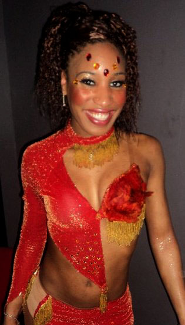
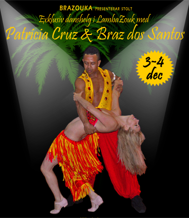

Dansa som en docka
Lär dig dansa som en docka! Välkomna på en intensiv workshop med fokus på munhecan (eller också kallad för boneca) – en av de mest karaktäristiska rörelserna för zouk lambadan. Vi fokuserar på teknikövningar, men jobbar även med dekorationer och sekvenser där munhecan kan ingå. Ett viktigt element inom zouken, som kräver precision, övning och kroppskontroll.
Workshopen är avsedd för följare och föranmälan krävs!
Nivå: minst en termin nybörjarkurs
Datum: 5 november
Tid: 18.00-19.00
Pris: 120 kr

♥ Kom på het och läskig Halloween-zouk 5 nov! ♥
Nu på lördag har vi social och den här gång kör vi på ett kusligt Halloween-tema! Zouk är hett, magiskt och sensuellt – kan det också vara läskigt?!
Inspirationsklädsel för kvällen: Svart som natten eller vit som ett spöke!
Kvällen börjar som vanligt med en workshop i zouk lambada kl. 19:00-19:30 – Alla nivåer är välkomna! Nybörjare som avancerad!
♫ ♪ Vi bjuder på den senaste musiken från zoukklubbar i England, Argentina, Holland och Brasilien! ♪ ♫
Bjud med vänner och bekanta så får de också uppleva zoukens förtrollade värld!
Tid: 19:00-22:00
Adress: S.M.A.C., Åsögatan 153, t-bana Medborgarplatsen
Workshop + fest: 70 kr
Fest: 50 kr
VARMT VÄLKOMNA!
Dansen däremot är helt annorlunda! Den dansas mest i sluten fattning och liknar en afrikansk tango! Den är mjuk och sensuell!
Gästparet , Donny&Nathalie, som kommer undervisa denna helg vann Storbritanniens mästerskap i Kizomba 2011!
|  | Nathalie, med fransk-karibisk börd, började sin danskarriär med ballet under 10 år, men hon har alltid dansat olika sorters afro-karibiska danser, i synnerhet Zouk. När hon flyttade till Storbritannien 2008 förälskade hon sig i Kizomba och gjorde snabbt stora framsteg. Hennes dans är full av energi, passion, smidighet o sensualitet! Som Storbritanniens växande stjärna i Kizomba har Nathalie uppträtt på olika event i Storbritannien och i Frankrike och använder numera sina talanger till att undervisa! |
Donny är född i Cameroon i Väst Afrika men växte upp i Frankrike. Angelägen om att utforska sina rötter, utövade han olika afrikanska danser under 10 år, men det var först när han kom till Storbritannien som han ramlade in i Kizomban och blev en inventarie på Londons heta Kizomba-golv! Donny är nu en alltmer populär instruktör och show-artist i Storbritannien. Han har undervisat och uppträtt för Studio Afro Latino, Kizomba UK event och på många andra kongresser runtom i Storbritannien o Frankrike och undervisar nu regelbundet på olika event i Storbritannien. |
Lördagen 19 nov: 3 workshops
Söndagen 20 nov: 5 workshops
Plats: Lännersta Skola, Saltsjö Boo, Nacka
Lördagkvällen: Brazoukas dansafton med tema Kizomba! Dresscode: Afro!
Kvällen börjar med en drop-in lektion i Kizomba för Donny&Nathalie kl. 20.30
för er som inte deltar på workshoparna dagtid men ändå vill prova på!
Därefter dansar vi Kizomba och/eller zouk framtill 23.30! Välkomna!
SMAC, Åsög. 153.
För mer info: www.kizombastockholm.se
el på FB: http://www.facebook.com/event.php?eid=280760848612517
Festival A lo Cubano
25-27 november
I slutet av november anordnas en salsafestival med kubanska förtecken i Stockholm!
A lo Cubano är ett evenemang för alla salsadansare som är intresserade av dans och kubansk musik och även andra latinamerikanska rytmer. Festivalen startade för 3 år sen i Sundsvallstrakterna men i år flyttas den till Stockholm.
Det blir en helg full av mycket dans och musik. 52 timmar workshops och 3 stora fester från fredag till söndag.
♫ ♪ Brazouka kommer ha workshops under lördag och söndag samt uppträda på lördag! ♫ ♪
Mer information om Festival A lo Cubano finner du på www.baila.se/festival

För första gången gästar det celebra dansparet Stockholm för en exklusiv helg med workshops och fester i Lambazouk på BRAZOUKAs dansskola! Deras dans är både inspirerande och energifull och de räknas som ett av de mest eftertraktade dansparen på zoukkongresser världen över. För nybörjare såväl som avancerad dansare – missa inte denna fullspäckade helg!
♪♫ HELGENS SCHEMA ♫♪
Lördag 3 dec:Workshop 1 16.00-17.00 Nyb 1
Workshop 2 17.15-18.15 Nyb 2
Workshop 3 18.30-19.30 Forts/Avanc
Fest 20.00-23.00
Söndag 4 dec:
Workshop 4 15.00-16.00 Forts/Avanc
Workshop 5 16.15-17.15 Forts/Avanc
Workshop 6 17.30-18.30 Men's & ladies' styling – alla nivåer
Fest 19.00-21.00
Plats: S.M.A.C (Stockholm Martial Arts Center)
Åsögatan 153, T-bana Medborgarplatsen
♪♫ PRISER ♫♪
1 Workshop 150 krFest Lördag 100 kr
Fest Söndag 70 kr
Paketpris NYBÖRJARE (workshop 1, 2 & 6) + fester 500 kr
Paketpris FORTS/AVANC (workshop 3, 4, 5 & 6) + fester 650 kr
ALL INCLUSIVE inkl. alla workshops + fester 750 kr
♪♫ ANMÄLAN ♫♪
Anmälan sker till info@brazouka.com. Begränsat antal platser, så först till kvarn gäller!~ BRAZ DOS SANTOS ~
Braz var en av dansarna bakom den världsberömda Lambadagruppen Kaoma som 1989 gjorde lambadan känd över hela världen. Han var Kaomas huvuddansare från 1989 till 1994 och turnerade runt i 64 länder. Han grundade Lambada (känd numera som LambaZouk i flera länder), en brasiliansk pardans, i Porto Seguro, Brasilien. Braz har instruerat och uppträtt på många stora dansevent samt vunnit många tävlingar, bland annat 1:a pris i den årliga nationella lambadatävlingen i Brasilien hela 7 gånger!Braz undervisar och uppträder på världskongresser på regelbunden basis, men är numera bosatt i London där han driver sin egen lambazouk-klubb. Man kan inte annat än att smittas av hans inspirerande dansstil och energi på kurserna och dansgolvet!
~ PATRICIA CRUZ ~
Patricia betraktas som en av de främsta dansarna i Lambazouk. Hon började som dansare i Porto Seguro, Bahía, där hon bodde i mer än tio år. Sin danskarriär initierade hon på Axé Moi och Reggae Night, två välkända dansställen i Porto Seguro. Tillsammans med Braz gav hon lektioner och uppträdde i Lambada i Buenos Aires under 90-talet. Patricia har även varit Didis (Braz bror) danspartner under flera år. Patricias dansstil karaktäriseras av elegans och hon brukar liknas vid en dansande ängel. Sedan sex år tillbaka undervisar och uppträder hon i London, där hon är bosatt.♪♫ VARMT VÄLKOMNA ♫♪
Brasilianska danskvällar – Zouksocials
Vi ordnar regelbundet danskvällar då våra elever och andra dansintresserade kan komma och dansa! Kvällen startar alltid med en workshop som varar en halvtimme och sedan fylls lokalen med den senaste musiken från zoukklubbar i England, Argentina, Holland och Brasilien!
♫ ♪ Dansgolvet är ert! ♪ ♫
Återstående planerade tillfällen hösten 2011:
19 nov
Mer information om dessa tillfällen följer.
VARMT VÄLKOMNA!